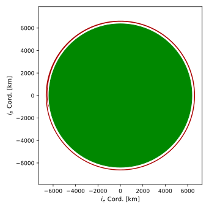
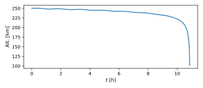
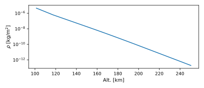
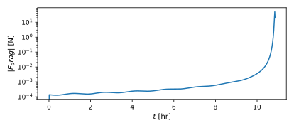
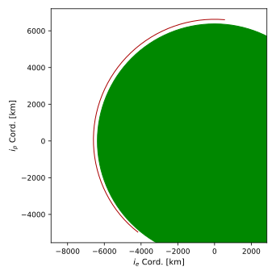
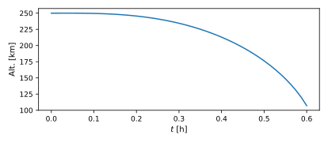
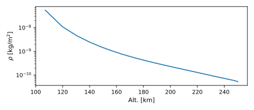
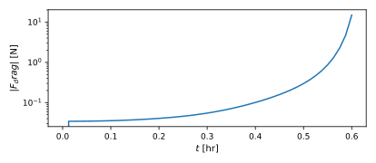

scenarioDragDeorbit
Overview
This scenario demonstrates how to set up a spacecraft orbiting Earth subject to atmospheric drag, causing it to deorbit. This is achieved using the Module: exponentialAtmosphere or Module: msisAtmosphere environment module and the Module: dragDynamicEffector dynamics module. The simulation is executed until the altitude falls below some threshold, using a terminal event handler.
The script is found in the folder basilisk/examples and executed by using:
python3 scenarioDragDeorbit.py
Simulation Scenario Setup Details
A single simulation with a spacecraft object is created, along with the atmosphere, drag, and gravity models.
If the exponential model is selected, the atmosphere module ExponentialAtmosphere() is initialized as atmo; to
set the model to use Earth-like values,
the utility:
simSetPlanetEnvironment.exponentialAtmosphere(atmo, "earth")
is invoked.
If the msis model is selected, the atmosphere module MsisAtmosphere() is initialized as atmo. Solar weather
data must be mocked in a message to the module, where sw_msg is a dict of reasonable ap and f10.7cm values:
swMsgList = []
for c, val in enumerate(sw_msg.values()):
swMsgData = messaging.SwDataMsgPayload()
swMsgData.dataValue = val
swMsgList.append(messaging.SwDataMsg().write(swMsgData))
atmo.swDataInMsgs[c].subscribeTo(swMsgList[-1])
The drag model DragDynamicEffector() is initialized, then model parameters are set. In this example, the projected
area coreParams.projectedArea is set to 10 meters squared and the drag coefficient \(C_D\)
coreParams.dragCoeff is set to 2.2.
Once the models have been added to the simulation task, the atmosphere, drag model, and spacecraft must be linked. First, the atmosphere model is given the spacecraft state message so it knows the location for which to calculate atmospheric conditions:
atmo.addSpacecraftToModel(scObject.scStateOutMsg)
Then, the drag effector is linked to the spacecraft:
scObject.addDynamicEffector(dragEffector)
The drag model will calculate zero drag unless it is passed atmospheric conditions. To link the atmosphere model to the drag model:
dragEffector.atmoDensInMsg.subscribeTo(atmo.envOutMsgs[0])
Illustration of Simulation Results
The following images illustrate the expected simulation run returns for a deorbit from 250 to 100 km with the exponential model.
The orbit is plotted in the orbital plane:
The altitude as a function of time is plotted.
The atmospheric density as a function of altitude is plotted in lin-log space. Since this uses the exponential atmosphere model, the result should be linear.
The magnitude of drag force over time is plotted in lin-log space.
The same plots are generated using the MSIS model:
   - scenarioDragDeorbit.run(show_plots, initialAlt=250, deorbitAlt=100, model='exponential')[source]
Initialize a satellite with drag and propagate until it falls below a deorbit altitude. Note that an excessively low deorbit_alt can lead to intersection with the Earth prior to deorbit being detected, causing some terms to blow up and the simulation to terminate.
- Parameters:
show_plots (bool) – Toggle plotting on/off
initialAlt (float) – Starting altitude in km
deorbitAlt (float) – Terminal altitude in km
model (str) – [“exponential”, “msis”]
- Returns:
Dictionary of figure handles